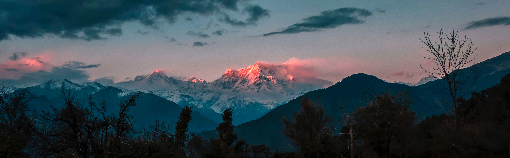
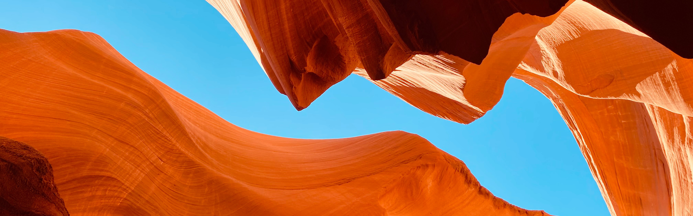

MOUNTAIN
Elevated portion of the Earth's crust, generally with steep sides that show significant exposed bedrock.
An area where the vegetation is dominated by grasses (Poaceae). However, sedge (Cyperaceae) and rush (Juncaceae) can also be found along with variable proportions of legumes, like clover, and other herbs.
Grassland


CANYON
A deep cleft between escarpments or cliffs resulting from weathering and the erosive activity of a river over geologic time scales.
A barren area of landscape where little precipitation occurs and, consequently, living conditions are hostile for plant and animal life. The lack of vegetation exposes the unprotected surface of the ground to denudation.
DESERT